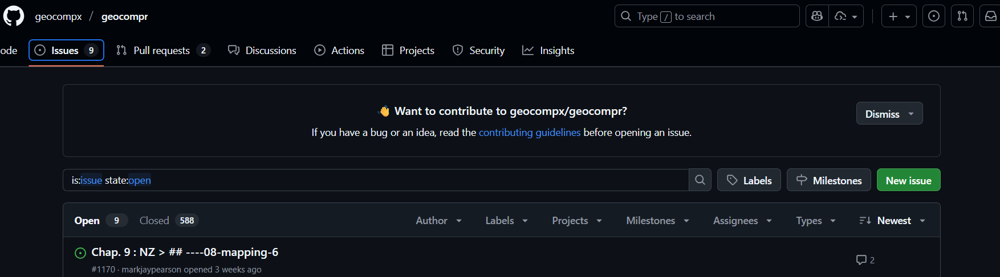
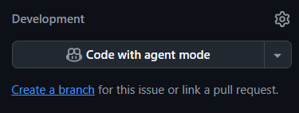

TfSE AI and Data Science for Transport Course
1 Introduction
We’re developing materials to support teaching of AI and Data Science for Transport, building on introductory webinars on AI and transport that will cover:
- Webinar 1: What is AI?
- Use of AI in data analysis
- Application of AI in transport planning
2 Questions for course organisers
- What compute environments do participants have access to currently?
- VS Code + copilot
- Jupyter Notebooks
- Cloud provider such as AWS or Google Cloud
- Any additional information on what software they use on a daily basis
3 Questions for potential attendees
We would like to collect responses to the following questions from potential attendees:
3.1 Current working practices
- Which software, web applications or other digital tools do you use for your day-to-day transport planning work?
- With reference to a recent project or concrete example, describe typical work tasks that you need to complete on a day-to-day basis.
- What are the most boring parts of your work?
- Which parts of your work are most conducive to automation?
3.2 AI tools
- Which AI tools have you heard of?
- Which AI tools have you tested?
- Which AI tools do you currently use in your work (if any)?
- Are there any particular AI tools or technologies you are interested in learning more about?
3.3 Data and data science
- How do you currently use data in your decision-making processes?
- What kinds of data do you use?
- Which data science tools do you use?
- Do you use any programming languages (e.g., Python, R) for data analysis?
- Do you use interactive development environments (e.g. VS Code) for your work, and if so which?
3.4 General
- What skills or knowledge do you hope to gain from this course?
3.5 Course Overview
This 6-hour course provides a comprehensive introduction to the field of Data Science and AI and Data Science for Transport.
We have found consistently that the best way to take advantage of the new AI tools and techniques is to integrate them into robust and reproducible data science methods. The principles of “garbage in, garbage out” and “all models are wrong but some are useful” applies equally to AI models as they do to traditional models. With the power of AI, it is even more important to have have high-quality input datasets, reproducible workflows that enable quality assurance (QA) steps and agile development practices that can adapt to changing datasets, requirements and computational capabilities.
This course will focus on practical applications and real-world examples to help participants understand how to leverage AI in their work.
Participants will consolidate their knowledge of fundamental concepts, tools, and techniques and learn to apply them to analyze transport datasets, gain insights, and add value. By the end of it, you will be empowered to use AI and other digital tools to convert raw datasets into actionable evidence for safer, healthier and more efficient transportation systems. The course will be tailored to the specific needs and backgrounds of Transport for the South East.
3.6 Syllabus (6 hours total)
The course will run from 10:00 to 17:00, with a 1-hour break for lunch.
3.6.1 Module 1: Foundations of AI in Transport (10:00 - 11:30)
Lecture (30 mins):
Demystifying AI: Key concepts and terminology.
- Cross-referencing Anthropic’s free AI Fluency course
Data Science as a framework for applying AI effectively.
- Our own experience and unique take on it
Overview of AI applications in transport planning.
- …
3.7 Ethical considerations and “garbage in, garbage out” vs prompt engineering and context engineering.
Practical (60 mins):
Interactive session exploring real-world AI use cases in transport.
- Hands-on exercise identifying potential AI applications in common transport planning tasks (~20 mins).
- Start with pen and paper (recommended)
- Draw a flowchart of an example from your current work
- Draw a flowchart that shows how AI could be introduced
- Bonus if fast: do for another project/workflow, which project is most conducive to AI integration?
- In groups of around 5 people: talk about how best to integrate AI in your work from first principles (~20 mins).
- Feedback to everyone and discuss common themes (~20 mins).
3.7.1 Module 2: (AI-Powered) Coding and Development (11:30 - 12:30)
- I Do: Live Demonstration (11:30 - 11:50)
- Instructor introduces AI-powered IDEs (VS Code) and AI coding assistants (GitHub Copilot).
- Demonstrates an efficient AI-assisted workflow, highlighting best practices for prompting and when to use AI.
- Live coding: Using Copilot to generate, explain, and debug Python code for a common transport data task (e.g., loading a dataset).
- We Do: Guided Practice (11:50 - 12:10)
- Building on the “I Do” example, participants follow along with the instructor.
- Guided exercise: Use Copilot to perform the next step, such as cleaning the data or or adding a new feature.
- Collaborative problem-solving: The instructor introduces a bug, and the group uses AI tools to identify and fix it together.
- You Do: Independent Application (12:10 - 12:30)
- Participants receive a small, related challenge to solve independently or in pairs.
- Task: Use Copilot to automate a script for data handling or generate a simple visualization.
- Instructor provides support and reviews solutions.
# Make a graph showing x and x^2:
import matplotlib.pyplot as plt
import numpy as np
x = np.linspace(0, 10, 100)
y = x**2
plt.plot(x, y) 3.7.2 Lunch Break (12:30 - 13:30)
3.7.3 Module 3: Using LLMs for Reporting and Analysis (13:30 - 15:30)
- Lecture (30 mins):
- Introduction to Large Language Models (LLMs) and prompt engineering.
- Techniques for using LLMs with transport-related documents and data.
- Practical (90 mins):
- Reading and summarising transport policy documents.
- Real-world example: analysing 100+ Local Cycling and Walking Infrastructure Plans.
- Analysing qualitative data (e.g., consultation responses).
- Drafting sections of a transport report based on provided data.
3.7.4 Module 4: AI and Data Science for Transport Data Analysis (15:30 - 17:00)
- Lecture (15 mins):
- How AI accelerates data cleaning, preprocessing, and exploratory analysis.
- Using AI to identify patterns and generate hypotheses from transport datasets.
- Practical (75 mins):
- Guided case study: Using AI tools to analyze a transport dataset from start to finish.
- Generating visualizations and interpreting results with AI assistance.
- Course wrap-up and Q&A.
3.8 Resourcing
The development and initial delivery of this course is estimated at 5 days total, including preparation and delivery:
- Robin Lovelace: 3 days
- Chris: 2 days
4 Content
This draft will go into the sections, e.g. s1.qmd, s2.qmd, …
We will teach you the framework within which you will get the most out of AI, maximising opportunities for productivity gains
Anthropics’ course on using AI reference
The way towards productivity gains is automation

General principle: code better than clicking (technically, CLI > GUI)
Installing GH CLI tool
https://tdscience.github.io/dstp/s6.html
General principle: Code review is good
Implementation:
gh issue create
gh issue develop xx --checkout
# e.g. gh issue develop 11 # to work on issue 11
gh pr create --reviewer chris-r-uolWays to use AI. Task watch Lesson 1:Introduction to AI Fluency from Anthropic’s free AI course (pre course)

Next steps (2025-10-02):